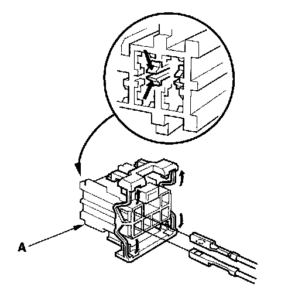
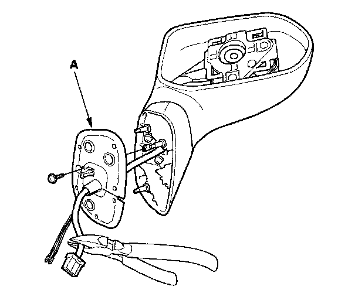
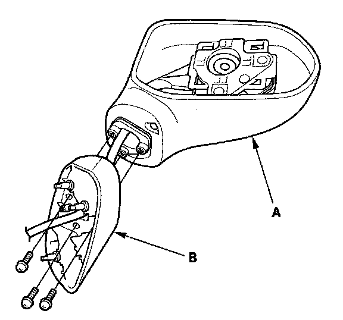
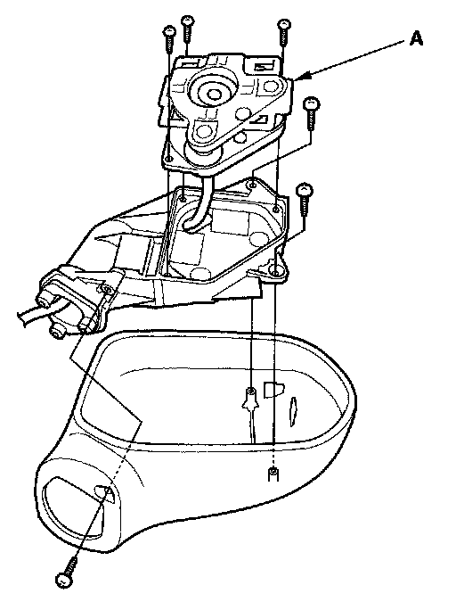
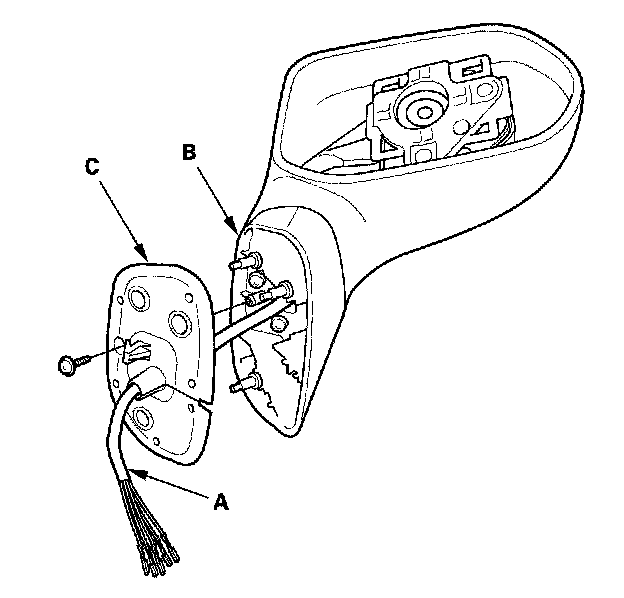
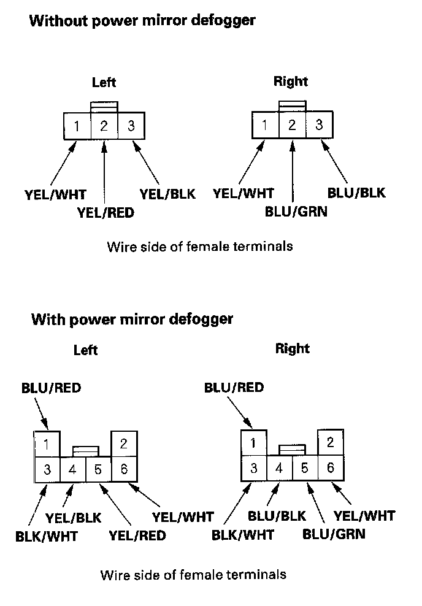

4-Door
Power Mirror Actuator Replacement4-door
1. Remove the mirror holder.
2. Remove the power mirror.
3. Disconnect the 3P (without power mirror defogger) or 6P (with power mirror defogger) connector from the mirror.

4. With power mirror defogger: Disassemble the power mirror 6P connector (A), and remove the No.1 and No.3 terminals from it.

5. Remove the screw from the gasket (A).
6. Record the terminal locations and wire colors.
7. Cut the wire harness with wire cutters, and remove the gasket.

8. Remove the three screws, and separate the mirror housing (A) from the bracket (B).

9. Remove the six screws, and the actuator (A).

10. Route the wire harness (A) of the new actuator through the hole in the bracket (B) and gasket (C).
11. Install the actuator, bracket, harness clip, and gasket in the reverse order of removal.

12. Insert the new actuator terminals into the connector in the original arrangement.
13. Apply tape to seal the intersection of the wire harness and the gasket.
14. Reassemble in the reverse order of disassembly. Be careful not to break the mirror when reinstalling it to the actuator.
15. Reinstall the mirror assembly on the door.
16. Operate the power mirror to ensure smooth operation.